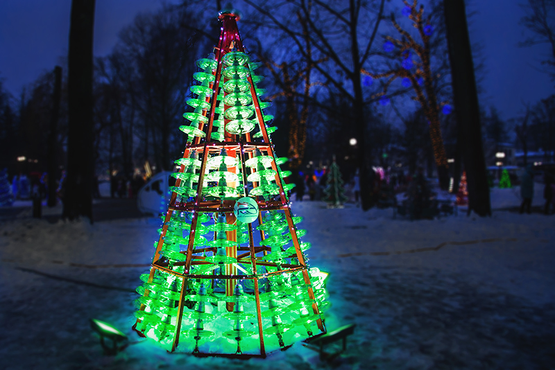
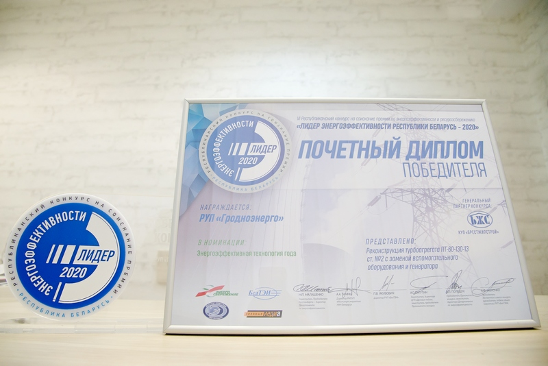
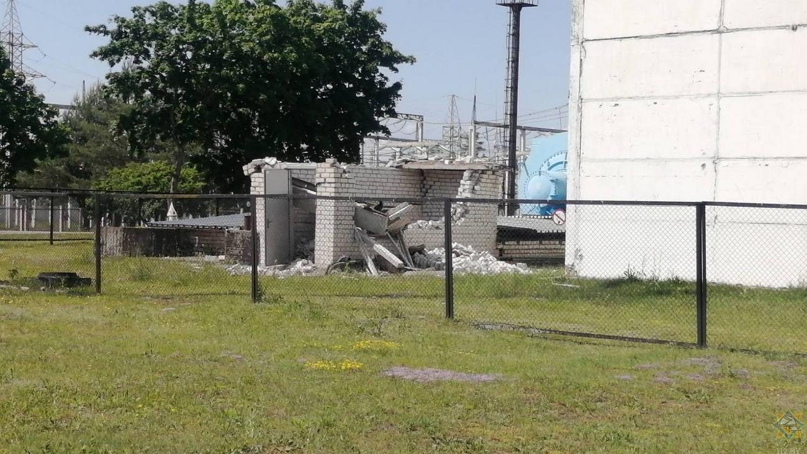
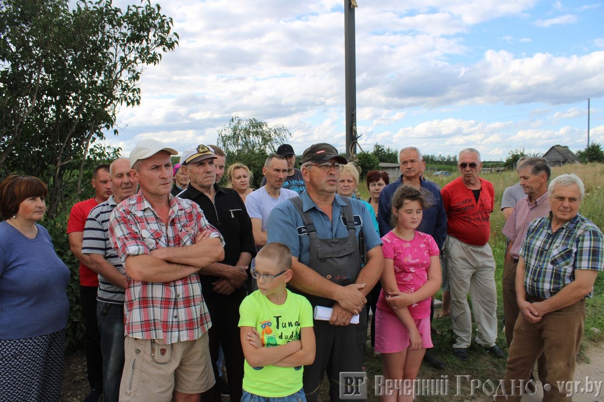

Новости

Объявляется конкурс на лучшее конструкторское решение дизайнерской новогодней ёлки
Традиционно в преддверии Нового года в Гродно проводится городской конкурс «Лучшая новогодняя ёлка». В связи с этим РУП «Гродноэнерго» объявляет среди энергетиков конкурс на лучшее конструкторское решение дизайнерской ёлки.
Успехи агрофирмы "Старый Дворец"
Среди сельскохозяйственных филиалов ГПО «Белэнерго» берестовиччане – лидеры по урожайности зерновых и зернебобовых культур и семенам рапса, по среднесуточному привесу крупного рогатого скота, и на втором месте – по удою молока на корову. С такими результатами встречает свой профессиональный праздник филиал «Агрофирма «Старый Дворец» РУП «Гродноэнерго».
Акцент на безопасности – не «прожигай» свою жизнь!
В Гродно на протяжении ноября проходит республиканская акция МЧС «Не прожигай свою жизнь», направленная на предупреждение пожаров и гибели людей на них по причине неосторожного обращения с огнем при курении.

Госконтроль: у «Гродноэнерго» есть резерв для экономии 100 тысяч долларов
Гродноэнерго» может дополнительно сэкономить на топливе порядка 100 тысяч долларов. Об этом было сказано во время коллегии Комитета госконтроля, которая состоялась в Минске в понедельник, 24 сентября.

РУП «Гродноэнерго» стало победителем конкурса «Лидер энергоэффективности – 2020»
10 ноября состоялась церемония награждения победителей Республиканского конкурса в сфере энергоэффективности и ресурсосбережения «Лидер энергоэффективности Республики Беларусь-2020». В этом году она проходила в необычном онлайн-формате.

На подстанции в Гоже произошло разрушение пристройки — есть пострадавшие (официальный комментарий «Гродноэнерго»)
Инцидент произошел в четверг, 11 июня, около 14 часов дня на одной из подстанций в Гоже, относящейся к РУП «Гродноэнерго». 6 человек направлены в медицинское учреждение для проведения обследования.

Деревня невезения: в Чещевлянах под Гродно перебои с электричеством и нет нормальной дороги — что им отвечают власти?
Чещевляны находятся в нескольких километрах от Гродно, здесь около 90 домов. Но в деревне живут без нормального света и хорошей дороги. Действующие электросети не выдерживают нагрузки, а газ подведут ещё нескоро.